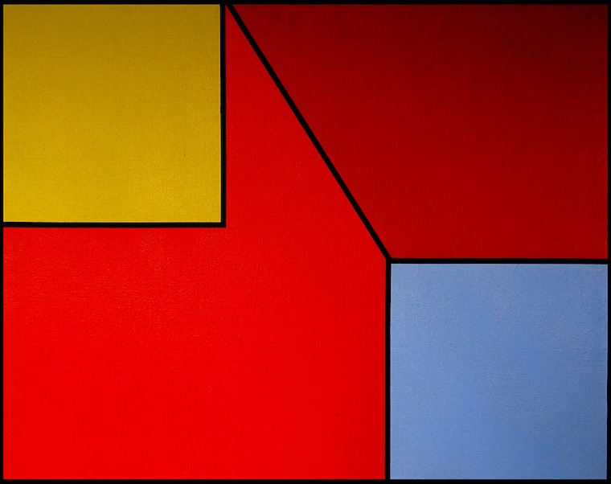

Diane Kirkpatrick, professor of art at the University of Michigan in 1973, writes of Rubello's early geometric paintings:
The back plane never reads as infinite space, but rather as a visual limit in front of which, and against which, the volumes act. The volumes also interact with each other; the relationships are never those of stasis, but rather those of implied movement as if Rubello in each piece had caught one moment in a fluid geometric dance….We are never permitted to settle comfortably, even for an instant, into one reading of the forms in space….The work of David Rubello introduces us to a magic world of shapes and space which becomes animated as we look at it.13
See PERCEPTION .